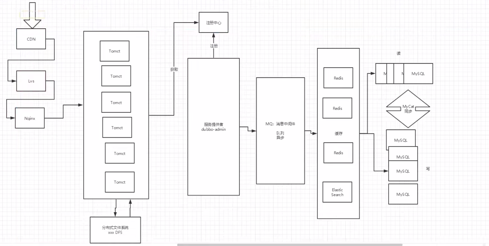

SpringCloud简介：
Spring Cloud 是一系列框架的有序集合，它利用 Spring Boot 的开发便利性简化了分布式系统的开发，比如服务发现、服务网关、服务路由、链路追踪等。Spring Cloud 并不重复造轮子，而是将市面上开发得比较好的模块集成进去，进行封装，从而减少了各模块的开发成本。换句话说：Spring Cloud 提供了构建分布式系统所需的“全家桶”。
Spring Cloud 优缺点
其主要优点有：
集大成者，Spring Cloud 包含了微服务架构的方方面面。
约定优于配置，基于注解，没有配置文件。
轻量级组件，Spring Cloud 整合的组件大多比较轻量级，且都是各自领域的佼佼者。
开发简便，Spring Cloud 对各个组件进行了大量的封装，从而简化了开发。
开发灵活，Spring Cloud 的组件都是解耦的，开发人员可以灵活按需选择组件。
接下来，我们看下它的缺点：
项目结构复杂，每一个组件或者每一个服务都需要创建一个项目。
部署门槛高，项目部署需要配合 Docker 等容器技术进行集群部署，而要想深入了解 Docker，学习成本高。
Spring Cloud 的优势是显而易见的。因此对于想研究微服务架构的同学来说，学习 Spring Cloud 是一个不错的选择。
微服务的四个核心问题：
1.服务很多，客户端之间该怎么进行访问？
2.这么多服务，服务之间如何通信？
3.这么多服务，如何治理？
4.服务挂了怎么办？
解决方案
Spring Cloud 是一个生态，解决上面四个问题。
SpringCloud NetFlix 一站式解决方案
api网关，zuul组件
Frign —HttpClient——Http通信方式，同步，阻塞
服务注册发现：Eureka
熔断机制：Hystrix
Apache Dubbo Zookeeper 半自动，需要整合别人的
API：没有，找第三方组件 ，或者自己实现
Dubbo ：RPC通信组件
Zookeeper
没有熔断机制，借助Hystrix
所以说，Dubbo这个方案并不完善。只专注于RPC
SpringCloud Alibaba 最新的一站式解决方案
更简单，和第一个类似，界面不一样了，简化了
新概念：服务网格 Server Mesh
istio
万变不离其宗
1.API 解决路由问题
2.Http RPC 解决通信问题
3.注册和发现 解决高可用问题
4.熔断机制 解决服务降级的问题 防止服务雪崩
常见面试题
1.什么是微服务？
2.微服务之间是如何独立通讯的？
3.SpringCloud 和 Dubbo之间有哪些区别？
4.SpringBoot和SpringCloud，请你谈谈对他们的理解
5.什么是服务熔断？什么是服务降级
6.微服务的优缺点分别是什么？说下你在项目开发中遇到的问题
7.你所知道的微服务技术栈有哪些？
8.eureka 和 zookeeper都可以提供服务注册与发现的功能，请说说两个的区别？
微服务优缺点
优点
- 单一职责原则 苹果手机
- 每个服务足够内聚，足够小，代码容易理解没这样能聚焦一个指定的业务功能或业务需求
- 开发简单，开发效率提高 一个服务可能就是专一的只干一件事；
- 微服务能够被小团队单独开发，这个小团队是2-5人的开发人员组成
- 微服务是松耦合的，是具有功能意义的服务，无论是在开发或者部署阶段都是独立的
- 微服务能使用不同的语言开发
- 易于和第三方集成，微服务允许容易且灵活的方式集成自动部署，通过持续集成工具，如jenkins,Hudson,bamboo
- 微服务易于被一个开发人员理解，修改和维护，这样小团队能够更关注自己的工作结果，无需通过合作才能体现价值
- 微服务允许你利用融合最新技术
- 微服务知识业务逻辑的代码 不会和html css 或 其它界面混合
- 每个微服务都有自己的存储能力，可以有自己的数据库，也可以有统一数据库
缺点
- 开发人员要处理分布式系统的复杂性
- 多服务运维难度，随着服务的增加，运维的压力也增大
- 系统部署依赖
- 服务间通信成本
- 数据一致性
- 系统集成测试
- 性能监控
微服务技术栈
| 微服务条目 | 落地技术 |
|---|---|
| 服务开发 | SpringBoot，Spring，SpringMVC |
| 服务配置与管理 | NetFlix公司的Archaius、阿里的Diamond等 |
| 服务注册与实现 | Eureka、Consul、Zookeeper |
| 服务调用 | Rest、RPC、gRPC |
| 服务熔断器 | Hystrix、Envoy |
| 负载均衡 | Ribbon、Nginx等 |
| 服务接口调用(客户端调用服务的简化工具) | Feign |
| 消息队列 | Kafka、RabbitMQ、ActiveMQ等 |
| 服务配置中心管理 | SpringCloudConfig、Chef等 |
| 服务路由(API网关) | Zuul等 |
| 服务监控 | Zabbix、Nagios、Metrics、Specatator |
| 全链路追踪 | Zipkin、Brave、Dapper |
| 服务部署 | Docker、OpenStack、Kubernetes |
| 数据流操作开发包 | SpringCloud Stream(封装Redis Rabbit Kafka等发送接收消息) |
| 事件消息总线 | SpringCloud Bus |
SpringBoot 和 SpringCloud 的关系
- SpringBoot 专注于快速方便地开发单个个体微服务
- SpringCloud是专注全局的微服务协调整理治理框架，它将SpringBoot 开发的一个个单体微服务整合并管理起来，为各个微服务之间提供：配置管理，服务发现，断路器，路由，微代理，事件总线，全局锁，决策竞选，分布式回话等等集成服务
- SpringBoot可以离开SpringCloud独立使用，开发项目，但是SpringCloud离不开SpringBoot，属于依赖关系
- SpringBoot专注于快速、方便的开发单个个体微服务，SpringCloud关注全局的微服务治理框架
传统网站架构图
